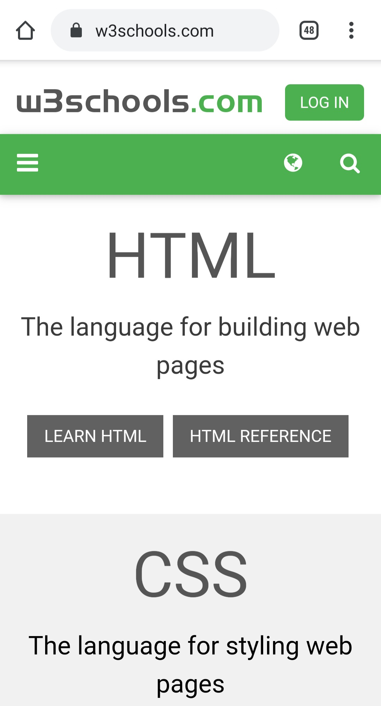

Repetition
The Church of Jesus Christ of Latter-day Saints
On The Church of Jesus Christ of Latter-day Saints website there are many articles that you can read from. And instead of only giving you a short headline with text they give you the title of the article and a picture right behind it. With them having all of their homepage articles like this I can find what I am looking for easier because of the repeating pattern they have with pictures.
Contrast
w3schools
When visiting w3schools I usually go there to have a question answered. Right away when you get there your eyes are brought to the bright green search bar. The contrast between the white and green is great for catching my attention to what I need.
Proximity
KOTOR wiki
Recently I am doing another run through of Starwars Knights of the Old Republic (KOTOR) I would often find myself trying to remember something and would go to this wiki about the website. What I enjoy about it is how easy it is to find out information that I need. It may not be the most flashy website but handles vast amounts of information the game has without making it too crammed.